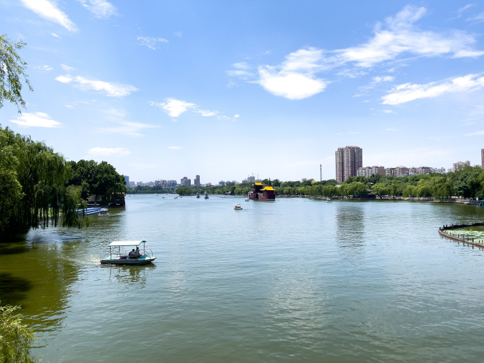

- Daming Lake
-

Daming Lake is the largest lake in the city of Jinan, Shandong, China and one of city's main natural and cultural landmarks. Located to the north of the historical city center, the lake is fed by the artesian karst springs of the area and hence retains a fairly constant water level through the entire year.
Daming Lake Park covers a total area of 860,000 square meters (about 212 acres) of which the lake itself comprises of 460,000 square meters (about 113 acres). The six islands in Daming Lake contain flowers, trees and other plants flourishing amongst the various pavilions. The lake is a center of activity and one can find fish leaping near yachts and boats. In summer, lotuses bloom uninhibitedly filling half of Daming Lake Park with its fragrant scent. At the same time, willows circle the lake on three sides and swing with the breeze, a scene for which Daming Lake is famous. The centerpiece of the lake is a great man-made hectometer fountain built in 1985. The fountain has 103 injectors, and the main injector can spout water as high as 100 meters (about 328 feet) in all its majesty.